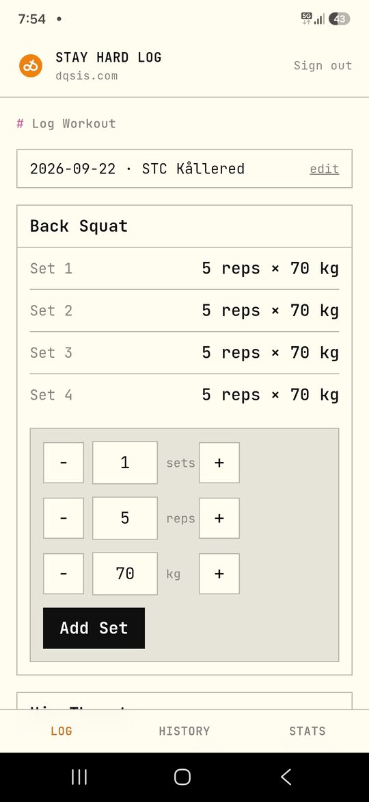
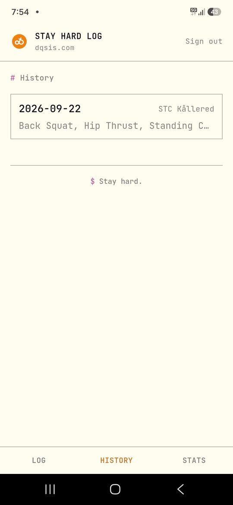
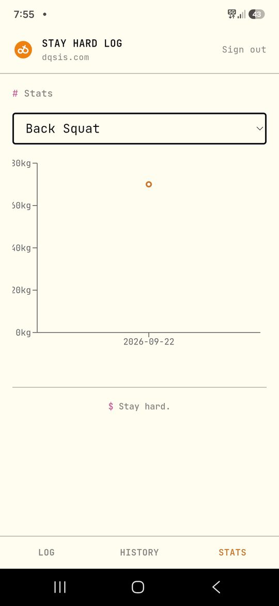

What it does
I used to log every workout — day, time, location, exercises, sets, reps — in a notebook I carried around. Stay Hard Log moves that online: a fast, mobile-first logger for standing at the gym, with the same data synced and browsable from a laptop afterward. It's built for exactly one user (me), with no public sign-up.
- Log: pick an exercise from a growing, self-built list, set reps/weight once, and log identical straight sets in a single tap.
- History: every past session, searchable by date, with the full set-by-set breakdown.
- Stats: top-set weight over time, per exercise.
- Done: closes the current session and opens a fresh one — same day or not.
- Installable: add-to-home-screen PWA, opens full-screen like a native app.
Stack
Frontend
React + Vite + TypeScript, styled with Tailwind CSS v4
Backend
Supabase — Postgres, Auth, and row-level security scoping every row to my account
Hosting & CI
Vercel, auto-deploying to production on every push to GitHub
PWA
vite-plugin-pwa — installable, offline-cached app shell
Screenshots

Log

History

Stats
Shot on the phone it's actually used on — this is the app mid-workout, not a mockup.